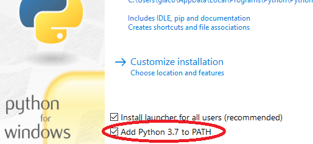
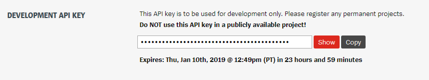
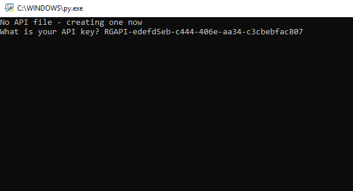

An FAQ for any commonly asked questions about League Statistics. It also holds the beginner guide for people completely new to Python.
If you've never used Python before, this is the right place to start. Firstly, you'll need to install Python. Note that on Linux and MacOS it come pre-installed. I would recommend installing version 3.6.8, which is the version I am using to develop. You can download that here. Note that all versions, including the latest, are supported.
Once you've downloaded Python, double click on it to get it installing. Before moving on, make sure you enable Python to be installed to path. This will allow you to interact with Python in the command line and install modules via pip.

Now that you've installed Python, you'll need to download League Statistics. To do so, go to latest releases and download the latest one as a .zip. When it's downloaded, extract it and you'll see the files. Notice that if you try and run main.py, you'll get an error. That's because we need to install the modules now.
We need three modules (four if you are on Windows) to get League Statistics working. Go into your command line, and type in pip install riotwatcher. This installs RiotWatcher, which is the Python library that is used in the program to interact with the API. Once RiotWatcher has finished downloading, type in pip install pick. This installs Pick, which is used to make the menus. If you are on Windows, you'll need to also type in pip install windows-curses. Windows does not come preinstalled with Curses like MacOS and Linux so this is a necessary step. Finally, type in pip install requests to get the requests library.
Now you'll be able to run the script. Double click on main.py. A window will appear, and you will be asked to enter your Riot API key. To get this, go to the Riot Developer site and sign in or register. Once you have, scroll down until you see the password looking like box, and copy and paste what appears there into the input in League Statistics.

Make sure that your interface looks like below, then press enter. Note that after 24 hours, you'll have to refresh your API key in the Riot Dev site, and then go into /lib/apisettings.py and paste in the new API key between the two ".

You'll then enter the menu, and you'll be able to use League Statistics. Enjoy! If you face any issues please comment below in the Disqus section and I will reply within 24 hours.
You can get an permanent API key by going to the Riot Developer site, and selecting the button at the top right that says 'Register Project'. Click register app on the middle option, call it whatever you want and add a description. Request the standard APIs, and then submit. After a few days your request may be approved or rejected, and if it is approved, replace your current API key with the new permanent one. Make sure to never share your API key with anyone, even the temporary ones.
requests.exceptions.HTTPError: 403 Client Error: Forbidden for url: https://jp1.api.riotgames.com/lol/summoner/v4/summoners/by-name/malagith
If you are encountering an issue like this, this means that you either inputted the API key in correctly, your API key expired, or you did not select the correct server. Make sure you selected the correct server and your API key is up to date, and try again.
ValueError: options should not be an empty list
This is caused by the players list being empty. Don't try to load the players list when you haven't added anyone, try selecting 1 next time and adding a player. This will be fixed in a future update.